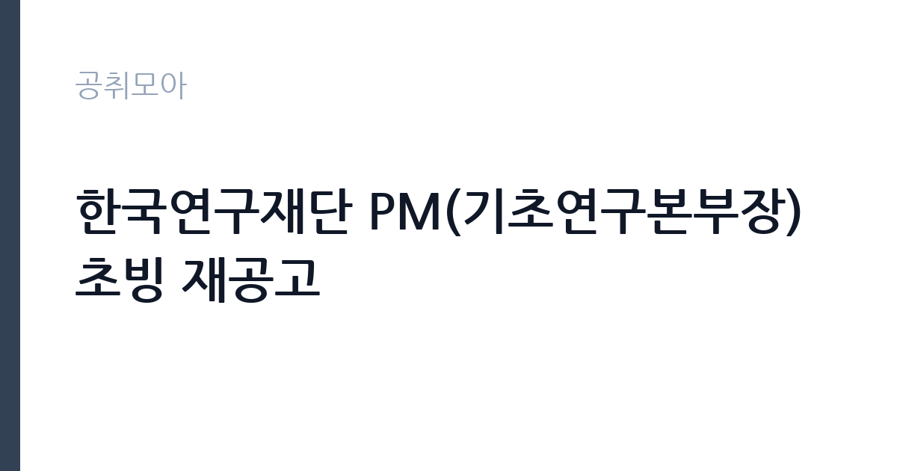

[공공기관] 한국연구재단 PM(기초연구본부장) 초빙 재공고
한국연구재단 · 대전 · 마감 2026-10-13 (D-21) · 출처 잡알리오

한눈에 보는 모집 조건
| 기관 | 한국연구재단 |
|---|---|
| 공고명 | 한국연구재단 PM(기초연구본부장) 초빙 재공고 |
| 고용형태 | 정규직 |
| 근무지 | 대전 |
| 게시일 | 2026-09-22 |
| 마감일 | 2026-10-13 (D-21) |
지원자격, 이렇게 읽으세요
- 공공기관 채용공시
- 세부 조건은 원문 공고문 확인
자격요건은 학위와 경력 연수로 엄격하게 정해져 있습니다. 박사학위 소지자는 연구경력 또는 연구행정경력 20년 이상, 석사학위 소지자는 25년 이상이어야 합니다. 연구경력은 대학과 공공·민간 연구소에서의 해당 분야 연구 수행 경력을, 연구행정경력은 연구 수행과 관련된 행정 경력을 의미합니다. 내부직원이 응모할 경우 책임연구원 이상으로 상기 조건을 충족해야 합니다. 해당 본부 소관 학문 분야에 국제적으로 인정받는 전문성과 사업 총괄·조정 능력을 함께 갖춰야 하므로, 대표 연구성과와 사업 운영 경험을 정리해 두시기 바랍니다.
이 공고의 포인트
첫 번째 포인트는 재공고라는 점입니다. 앞선 초빙에서 적임자를 찾지 못해 문을 다시 연 것으로, 해당 분야의 최고 전문가를 기다리는 자리입니다. 두 번째로 PM은 기초연구 지원 사업의 기획과 평가, 예산 배분을 총괄하는 위치라 국가 연구지원 정책에 직접적인 영향을 미칠 수 있습니다. 세 번째로 임기는 임용일로부터 2년(과거 공고 기준 2년 또는 3년 선택 사례 존재)으로, 연구 현장과 행정을 잇는 리더십을 발휘할 수 있습니다. 단 재직 기간 중 재단의 신규 연구과제에 참여할 수 없다는 제한이 있습니다.
전형은 어떻게 진행되나
전형은 지원서 접수와 심사위원회 평가, 면접 등의 절차로 진행되며, 세부 일정은 재단 홈페이지의 원문 공고에서 확인하시기 바랍니다. 접수 기간은 10월 13일까지로 여유가 있으나, 연구업적과 사업 운영 경험을 정리하는 데 시간이 걸리므로미리 준비하시기 바랍니다. 내부직원과 외부 전문가가 함께 응모할 수 있으며, 심사는 해당 분야의 전문성과 리더십을 중심으로 이루어집니다. 제출서류 목록과 접수처는 원문에서 반드시 확인하시기 바랍니다.
원문에서 확인한 전형 방식
해당 본부 소관 학문(기술)분야에 국제적으로 인정받는 탁월한 전문성과 소관 사업에 대한 총괄·조정 능력을 겸비한 자로서, 박사학위 소지자인 경우 연구경력 또는 연구행정경력 20년 이상, 석사학위 소지자인 경우 연구경력 또는 연구행정경력 25년 이상인 전문가 ※ 내부직원이 응모할 경우 책임연구원 이상이며 상기조건 충족자 ※ 자격요건에서 말하는 ‘연구경력’이라 함은 대학(교) 및 공공·민간 연구소 등에서의 해당 분야 연구 수행경력을 의미하고, ‘연구행정경력’이라 함은 대학(교), 공공·민간 연구소 및 연구지원기관 등에서의 연구 수행과 관련된 행정경력을 의미함
이런 분께 추천해요
- 기초연구 분야에서 20년 이상의 연구·행정 경력을 쌓으신 박사급 전문가
- 대학과 연구소에서 연구지원 사업 운영 경험이 있으신 분
- 국가 연구지원 체계의 기획과 조정을 이끌고 싶으신 원로 연구자
지원 전 체크리스트
- 박사 20년 또는 석사 25년의 경력 요건을 충족하는지 확인했습니다
- PM 재직 중 신규과제 참여 제한 조건을 확인했습니다
- 대표 연구성과와 사업 총괄 경험을 정리했습니다
- 원문 공고문의 접수방법과 마감일 10월 13일을 확인했습니다
모집 일정과 제출 타이밍
마감일은 2026년 10월 13일입니다. 접수 기간이 3주 정도로 여유가 있으나, 연구업적서와 경력 증빙을 정리하는 데 시간이 필요하므로 미리 시작하시기 바랍니다. 심사 일정과 임용 시기는 원문 공고와 재단 안내에 따르시기 바랍니다. 내부직원의 응모 조건도 함께 안내되어 있으니 해당자는 인사 부서와 상의하시기 바랍니다. 임기는 임용일로부터 2년이 기본이며, 세부 조건은 원문에서 확인하시기 바랍니다.
직무 이해하기: 공공기관
PM(기초연구본부장)은 기초연구본부 소관 학문 분야의 지원 사업을 총괄하고 조정합니다. 연구과제의 기획과 선정 평가, 예산 운영과 성과 관리의 전 과정을 책임지며, 학문 공동체와의 소통 창구 역할도 맡습니다. 한국연구재단은 국가 연구개발 지원의 중추 기관으로, 대전 본원에서 근무하게 됩니다. 공공기관 카테고리 공고로, 연구행정 리더십의 정점에 해당하는 자리입니다.
자기소개서 작성 팁
지원서에서는 연구업적의 우수성과 사업 운영 경험을 균형 있게 제시하시기 바랍니다. 국제적으로 인정받는 전문성을 보여주는 대표 논문과 수상 경력,대형 연구사업의 기획·평가 경험을 구체적으로 기술하시기 바랍니다. 기초연구 지원 철학과 본부장으로서의 비전을 명확히 밝히시면 좋습니다. 재직 중 신규과제 참여 제한을 이해하고 지원한다는 점도 밝혀주시기 바랍니다.
면접 준비 포인트
심사 과정에서는 기초연구 지원 정책에 대한 비전과 리더십을 직접 검증받을 가능성이 큽니다. 최근 연구재단의 기초연구 사업 방향과 학문 공동체의 현안을 미리 정리해 두시기 바랍니다. 대규모 예산과 평가 권한을 다루는 자리이므로 공정성과 투명성에 대한 소신을 명확히 밝히시기 바랍니다. 내부직원과 외부 후보자 간의 차별 없이 전문성 중심으로 평가받게 됩니다.
급여·근무조건 읽는 법
보수 수준은 원문 공고문에서 확인하셔야 합니다. 연구재단 PM의 보수는 재단 내규에 따른 임원급 처우가 적용되며, 세부 조건은 초빙 공고문과 재단 규정에 안내됩니다. 알리오 경영공시에서 재단의 임원 보수 현황을 참고하실 수는 있으나, 개인의 처우와는 차이가 있으므로 원문을 기준으로 판단하시기 바랍니다. 임기와 겸직 제한, 연구과제 참여 제한 등의 조건도 원문에서 함께 확인하시기 바랍니다.
자주 묻는 질문
- PM의 임기는 얼마나 됩니까
과거 공고 기준으로 임용일로부터 2년이며, 2년 또는 3년 중 선택하는 사례도 있었습니다. 이번 초빙의 정확한 임기는 원문 공고문에서 확인하시기 바랍니다. - 재직 중 연구과제 수행이 가능합니까
PM 재직 기간 중 재단에서 시행하는 신규 연구과제에 참여할 수 없으며, 기획에 참여한 과제는 임기 만료 이후에도 신청하거나 참여할 수 없습니다. - 내부직원도 응모할 수 있습니까
내부직원은 책임연구원 이상으로 상기 자격 조건을 충족하면 응모하실 수 있습니다. 세부 조건은 원문에서 확인하시기 바랍니다.
함께 보면 좋은 공고
[공공기관] 칠곡경북대학교병원 2026년 9월 5차 임시직원 채용공고(물리치료사, 간호사, 주차, 조경관리) — 마감 2026-09-28[공공기관] [KDI국제정책대학원] 2026년 제10차 인턴직원 채용(경영기획) — 마감 2026-10-08[공공기관] '탁구 영상 데이터 기반 동작 추정을 통한 스트로크 유형 분류 모델 연구' 초빙연구원(나급) 채용 공고 — 마감 2026-10-07출처: 잡알리오 공개정보를 바탕으로 공취모아가 정리한 안내글입니다. 모집 조건·일정은 변경될 수 있으니 지원 전 반드시 원문 공고문을 확인하세요. 본 글은 정보 제공용이며 합격을 보장하지 않습니다.